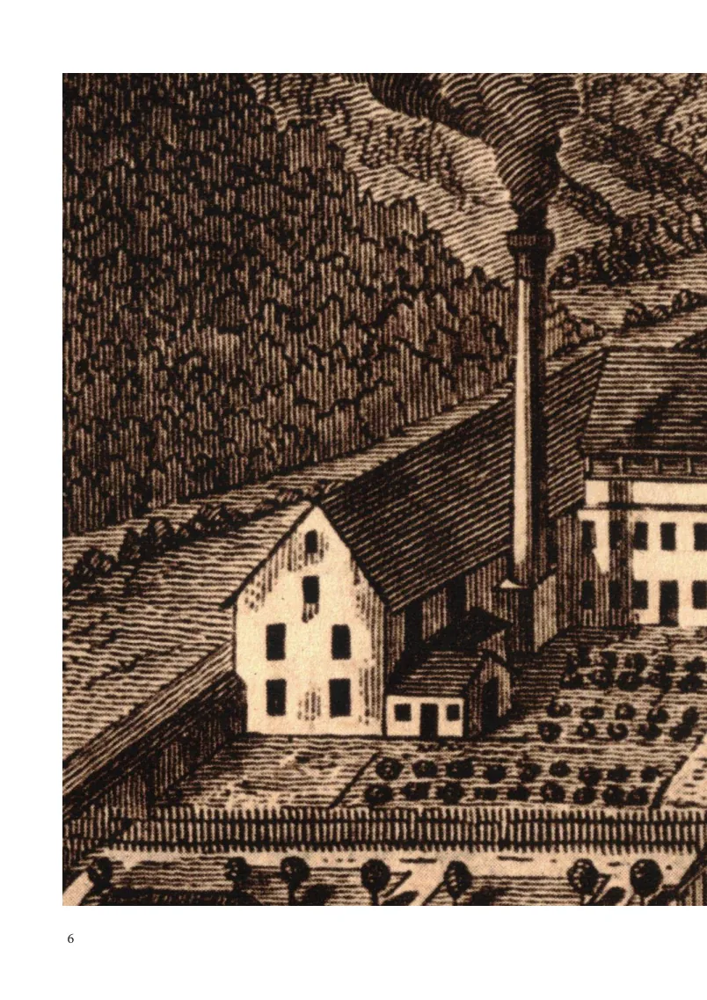
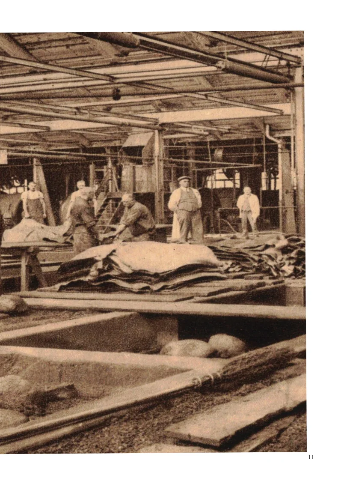
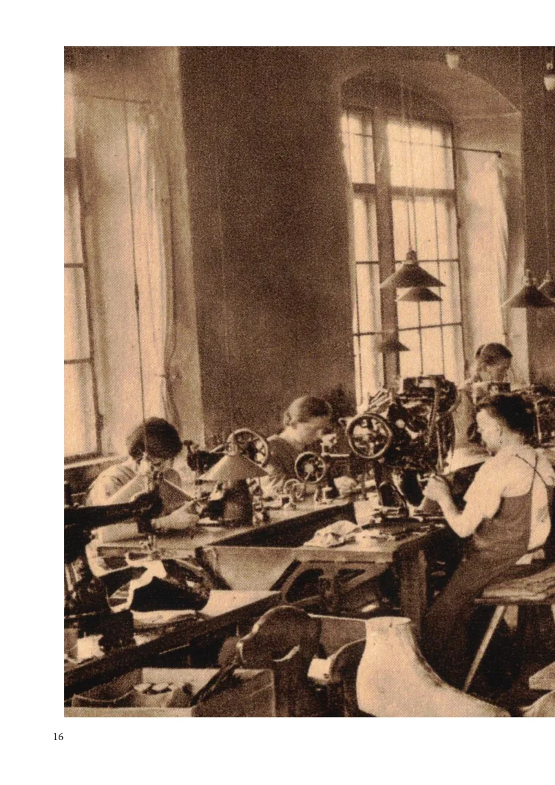
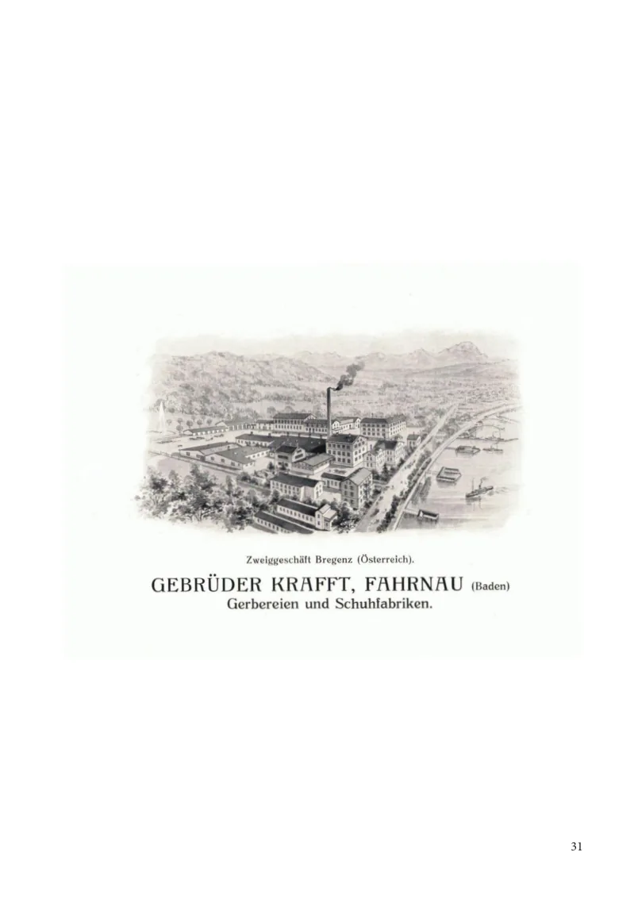
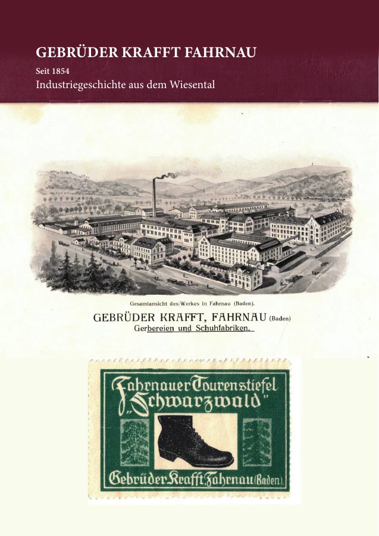

Gerberei & Leder
Wasser, Gerbgruben und pflanzliche Gerbstoffe bildeten die Grundlagen der frühen Produktion. Später kamen neue Verfahren und technische Ledererzeugnisse hinzu.
Fahrnau · Wiesental · seit 1854
Die Gebrüder Krafft prägten mit Gerberei, Lederverarbeitung und Schuhproduktion die Industriegeschichte Fahrnaus.
Entdecken Sie ein Stück regionaler Wirtschafts- und Sozialgeschichte: historische Fotografien, zeitgenössische Quellen und die Verbindung von Fahrnau bis nach Bregenz.

Von der Gerberei zur Industrie
1854 nahm Karl Wilhelm Krafft eine ältere Rotgerberei in Fahrnau wieder in Betrieb. Aus dem handwerklichen Anfang entwickelte sich ein Unternehmen, das sich auf Leder, technische Lederwaren und später die Schuhherstellung ausrichtete.
Die Geschichte begann nicht auf freiem Gelände: Schon im 18. Jahrhundert hatte es in Fahrnau eine Gerberei gegeben. 1854 wurden die vorhandenen Anlagen wieder genutzt.
1856 trat Karl Friedrich Krafft als Teilhaber ein. Von nun an wurde das Unternehmen unter dem Namen Gebrüder Krafft geführt.
Die Produktion reichte bald über die Region hinaus. Neben Leder für Schuhe entstanden auch Riemenleder und weitere Erzeugnisse für industrielle Anwendungen.
Grundlage: zeitgenössische Firmenunterlagen und die im Booklet ausgewertete Literatur.
Wiederaufnahme der alten Rotgerberei durch Karl Wilhelm Krafft.
Mit dem Eintritt von Karl Friedrich entsteht die Firma Gebrüder Krafft.
Ausweitung der Geschäftstätigkeit nach Bregenz in Vorarlberg.
75 Jahre Krafft: Die Jubiläumsschrift wird zur wichtigen historischen Quelle.
Produktion und Menschen
Die Geschichte von Krafft erzählt auch von Arbeit, technischen Veränderungen und dem Alltag in einem wachsenden Industrieort.
Wasser, Gerbgruben und pflanzliche Gerbstoffe bildeten die Grundlagen der frühen Produktion. Später kamen neue Verfahren und technische Ledererzeugnisse hinzu.
Die Fabrik erweiterte ihr Sortiment vom Arbeits- und Gebrauchsschuh bis zu unterschiedlichen Modellen für weitere Märkte.
Arbeiterhäuser, soziale Einrichtungen und die Entwicklung Fahrnaus zeigen, wie eng Werk und Ort miteinander verbunden waren.


Fahrnau und Vorarlberg
Die Geschichte der Gebrüder Krafft reicht über das Wiesental hinaus. 1881 entstand eine Niederlassung in Bregenz. Sie zeigt, wie das Unternehmen neue Standorte und Absatzmärkte erschloss.
Auch die Bregenzer Entwicklung, die Holzschuhproduktion und zeitgenössische Anzeigen gehören zur Recherche. Im Booklet werden diese Spuren im Zusammenhang mit der Firmengeschichte vorgestellt.
Mehr im Booklet erfahren

Die gedruckte Publikation
Das 40-seitige Booklet „Gebrüder Krafft Fahrnau – Industriegeschichte aus dem Wiesental“ führt historische Abbildungen, Firmenunterlagen und Forschungsergebnisse in einer zusammenhängenden Darstellung zusammen.
€ 10.– / CHF 10.–
Inklusive Versand nach DE · AT · CH
Ein Klick öffnet Ihr E-Mail-Programm mit einer vorbereiteten Bestellanfrage. Bitte Anzahl und Lieferanschrift ergänzen. Die Bestellung und Zahlungsabwicklung erfolgen anschliessend persönlich per E-Mail.
Bestellanfrage per E-Mail sendenKein automatischer Kaufabschluss. Die Verfügbarkeit wird per E-Mail bestätigt.
Quellen und Einordnung
Diese Website ist Teil einer unabhängigen historischen Forschungsinitiative. Die Angaben beruhen auf historischen Unterlagen und werden bei neuen Erkenntnissen überprüft und ergänzt.
Historische Abbildungen aus der Publikation Gebrüder Krafft Fahrnau (2026). Deren Quellenangaben verweisen unter anderem auf die Jubiläumsschrift von 1929. Rechte an einzelnen Originalen bleiben unberührt.
Recherche, Text und Herausgabe: Armin Wolfarth, Winterthur. Die Website ist keine offizielle Unternehmensseite und steht in keiner geschäftlichen Verbindung zur früheren Firma Gebrüder Krafft.
Verantwortlich für den Inhalt: Armin Wolfarth, Römerstrasse 46, 8400 Winterthur, Schweiz · armin@wolfarth.ch.
Diese statische Website wird über GitHub Pages bereitgestellt. Beim Aufruf können durch den Hostinganbieter technisch erforderliche Zugriffsdaten verarbeitet werden. Die Website selbst verwendet keine eigenen Analyse-Cookies und keine eingebetteten Trackingdienste. Bei einer Kontaktaufnahme per E-Mail werden die freiwillig mitgeteilten Angaben zur Bearbeitung der Anfrage und gegebenenfalls zur Bestellabwicklung genutzt. Details zur Datenverarbeitung durch den Hostinganbieter entnehmen Sie dessen Datenschutzhinweisen.
Vor dem öffentlichen Verkaufsstart sollten Bestellbedingungen, Verfügbarkeit und gegebenenfalls weitere rechtlich erforderliche Angaben geprüft werden.